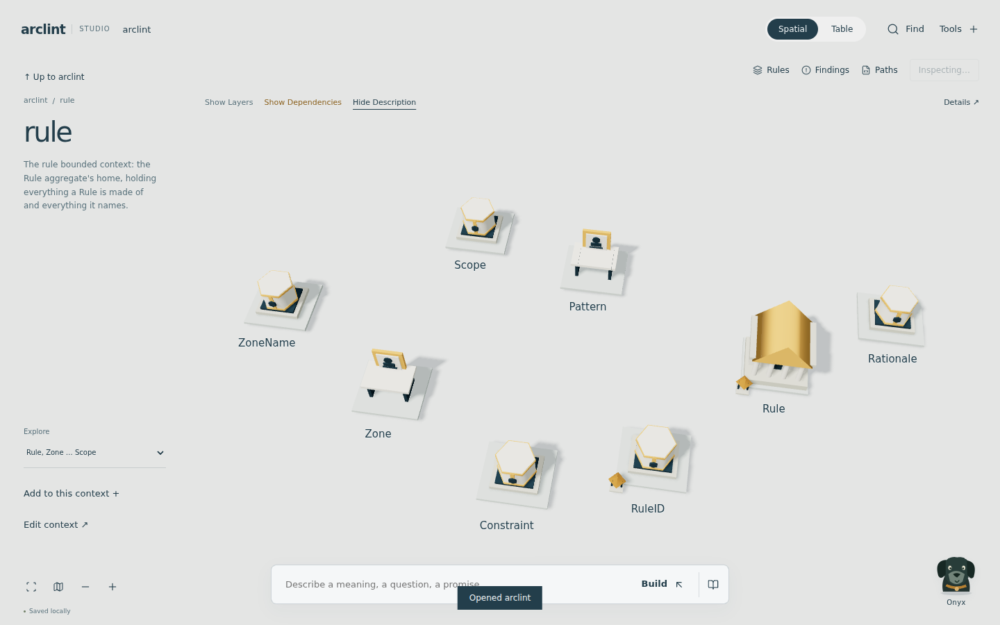
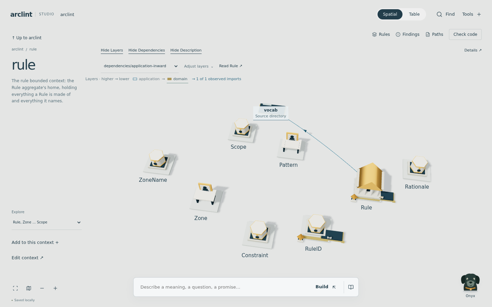
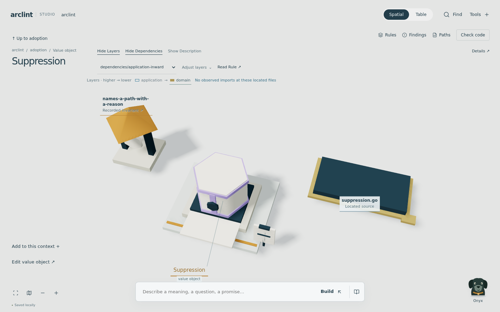

One place, several readings.
Enter a bounded context, work with its language, and reveal the code structure when it helps. The same selection, unfinished writing and domain records survive every view change.
01 / Enter a place
A context opens into a full working area. Named groups keep large contexts manageable; Find reaches any entry. Up returns to the previous group and camera position.

02 / Reveal architecture
Layers reveal the order declared by a selected Rule. Dependencies add directed routes from parsed imports. These controls are independent. A hollow layer swatch means no located membership was established here; it does not mean that Zone is empty throughout the repository.

03 / Inspect a subject
Opening an entry changes the composition and scale. Recorded invariants and operation assertions attach to their owner. Source ports lead to exact paths. Details holds inspection results, overlapping memberships and the complete import list.

What the references contributed
| Principle | Decision in Studio |
|---|---|
| Independent visibility | Layers, Dependencies and Description can be combined. Changing one does not select a different task or rewrite the model. |
| Navigation changes perspective | The project, context and selected entry receive different compositions. Up restores the place you left. |
| Space carries meaning | Only occupied source layers receive geometry. Zone overlap remains multiple memberships of the same file. |
| Progressive detail | The canvas limits selectable subjects. Exact evidence unfolds on demand; no repeated empty-source labels are scattered across the scene. |
| Evidence stays current | Repository changes trigger inspection automatically. Missing or incomplete evidence never turns into a successful inspection. |